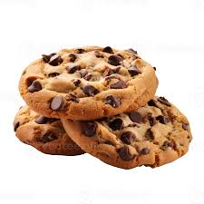

Cookies
Classic buttery cookies with crispy edges and a soft center, perfect for any time snacking.
🍽️ Serves
Makes 12
⏲️ Preparation Time
15 minutes
🔥 Cooking Time
12–15 minutes
🥣 Ingredients
- 1/2 cup unsalted butter
- 1/2 cup sugar
- 1/2 cup brown sugar
- 1 egg
- 1 tsp vanilla extract
- 1.25 cups flour
- 1/2 tsp baking soda
- Pinch of salt
- 1/2 cup chocolate chips (optional)
📝 Preparation
- Cream butter and sugars until fluffy.
- Add egg and vanilla, mix well.
- Add dry ingredients and chocolate chips.
- Drop spoonfuls on a tray, bake at 180°C for 12–15 mins.